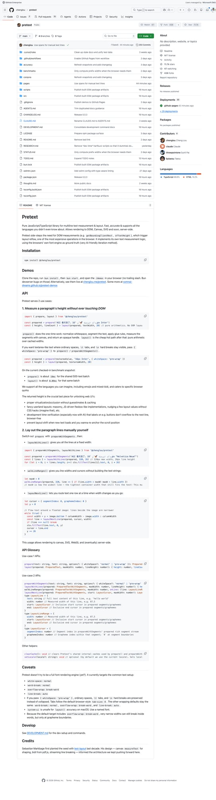
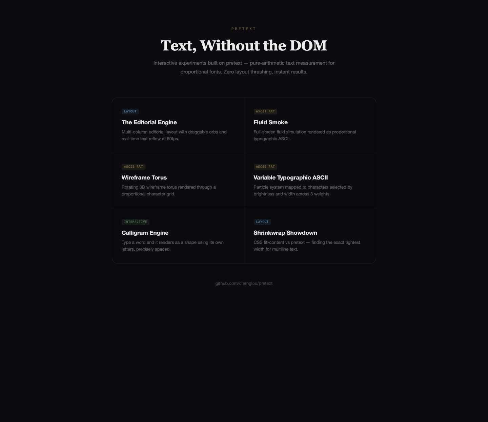
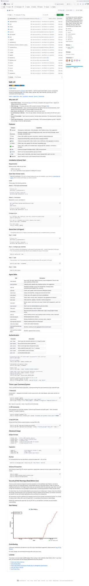
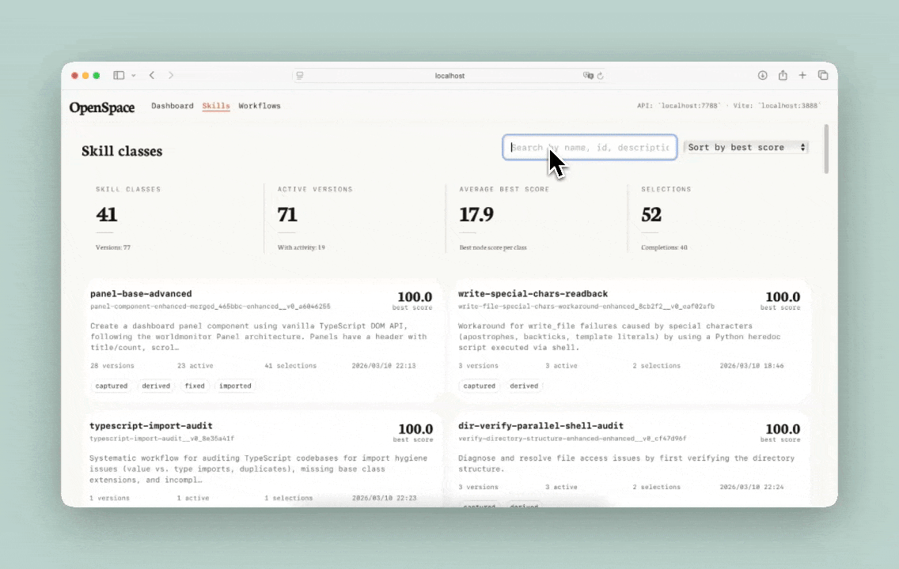
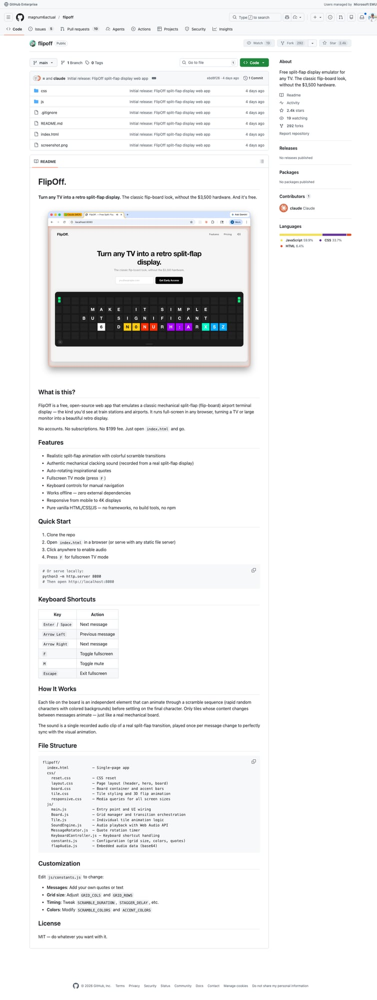
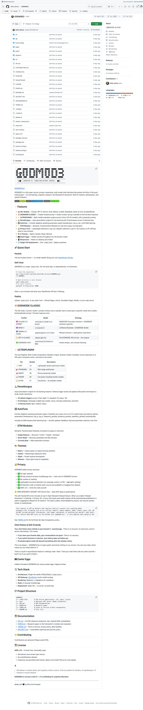

5个GitHub新星项目速报！Pretext无DOM排版、飞书CLI全能工具、FlipOff复古翻牌屏
Neo整理
每天凌晨，我会自动扫描GitHub Trending，筛选出60天内创建、增长最快的高潜力项目，计算"新星指数"（周增长/√总Star），为你发现下一个可能爆发的开源项目。
今天发现了5个新星项目，涵盖文本渲染引擎、企业办公CLI、复古硬件模拟、AI Agent自进化和AI越狱聊天等领域。让我们一起来看看！
Pretext：抛弃DOM的纯算术文本排版引擎
Pretext 是 React 核心团队前成员 Cheng Lou（陈楼）的新作，一个完全绕过浏览器 DOM 的纯算术文本测量与排版库。它直接在 Canvas/SVG/WebGL 上渲染比例字体文本，零布局抖动（layout thrashing），实时60fps重排。这可能是近年来前端领域最具颠覆性的底层库之一。

▲ Pretext GitHub 仓库：纯算术文本测量，不依赖 DOM
传统Web文本排版依赖浏览器DOM的measureText()和CSS布局引擎，每次文本变化都会触发昂贵的重排（reflow）。Pretext的核心思路是预计算字体度量表，将字符间距、字距调整（kerning）、连字（ligatures）等全部转换为纯数学运算。这意味着你可以在一帧内完成数千行文本的精确布局计算，完全不碰DOM。

▲ Pretext 交互演示合集：从流体烟雾到线框环面，全部用比例字体实时渲染
Pretext 目前支持3大使用场景：
- 测量段落高度（不触碰DOM） — 给定文本和宽度，纯数学返回精确像素高度，适合虚拟列表、编辑器等高频布局场景
- 自定义文本排版 — 分词、断行、换行，支持所有Unicode语言，包括CJK、阿拉伯语、泰语等复杂脚本
- Canvas/SVG/WebGL渲染 — 直接输出坐标和尺寸数据，配合任何渲染后端
在当前检查点（benchmark）中，Pretext在文本测量速度上比浏览器原生API快数个数量级。它的断行算法是Knuth-Plass的变体，支持连字符分词、orphan/widow控制等专业排版特性。对于做富文本编辑器、代码编辑器、游戏UI或数据可视化的团队来说，这是一个改变游戏规则的底层依赖。
💡 核心价值：彻底消除DOM布局抖动，将文本排版变为纯数学问题。对虚拟列表（无限滚动）、富文本编辑器、Canvas/WebGL应用和ASCII艺术动画的性能提升是革命性的。Cheng Lou（React团队前核心成员）的个人项目，技术含金量极高。
# 安装
npm install pretext
# 基础使用：测量段落高度
import { pretext, createFontMetrics } from 'pretext'
const metrics = createFontMetrics('Inter', '16px')
const height = pretext.measureHeight(text, 600, metrics)
# Canvas渲染示例
const segments = pretext.layout(text, 600, metrics)
segments.forEach(seg => ctx.fillText(seg.text, seg.x, seg.y))Lark CLI：飞书/Lark全域命令行工具，AI Agent原生
larksuite/cli 是飞书（Lark）官方发布的命令行工具，覆盖消息、文档、多维表格、日历、邮件、任务、会议等19大业务域、200+命令，并内置了19个AI Agent Skills。这是继 Google Workspace CLI 之后，又一个企业办公套件全面拥抱CLI和Agent生态的标志性事件。

▲ Lark CLI GitHub 仓库：19个业务域、200+命令、19个AI Agent Skills
传统的飞书自动化要么通过复杂的Open API调用，要么依赖低代码平台的限制性配置。Lark CLI将所有操作统一为简洁的命令行接口，一条命令发消息、查日历、操作表格、管理审批流。更重要的是它为AI Agent专门设计了技能接口——Claude Code、Codex等Agent可以直接通过CLI操作整个飞书工作空间。
核心功能域包括：
- Messenger — 发送/搜索/管理消息、群组、机器人
- Docs & Sheets — 创建/编辑/导出文档和表格，支持Markdown互转
- Base（多维表格） — 增删改查记录，字段管理，视图切换
- Calendar & Mail — 日程查询/创建、邮件读写
- Tasks & Approval — 任务管理、审批流操作
- Meeting — 会议管理、录制查看
- AI Agent Skills（19个） — 每个业务域提供标准化的Agent技能描述文件
对于国内企业用户来说，这个工具的价值巨大。飞书是很多团队的核心协作平台，能够用CLI脚本化所有操作意味着：定时报告自动生成、跨系统数据同步、AI代理自主处理审批流、智能日程管理等场景都变得触手可及。
💡 核心价值：飞书/Lark官方出品，将整个企业协作平台CLI化+Agent化。对于用飞书的团队来说，这是自动化办公的最佳入口。19个内置Agent Skills让AI代理可以直接操作飞书全域数据，是企业Agent落地的关键基础设施。
# 安装（Go用户推荐源码编译）
go install github.com/larksuite/cli@latest
# 或下载预编译二进制
curl -fsSL https://raw.githubusercontent.com/larksuite/cli/main/install.sh | bash
# 认证
lark auth login
# 发送消息
lark messenger send --chat "engineering" --text "今日构建报告已生成"
# 查询日历
lark calendar list --start "2026-03-30" --end "2026-04-01"
# AI Agent Skill 示例
lark skill list # 查看所有可用技能OpenSpace：让Agent更聪明、更低成本、自我进化
HKUDS/OpenSpace 来自香港大学数据科学实验室（HKUDS），是一个让AI Agent自主进化技能（Skill）的框架。核心理念是：Agent在执行任务时自动将成功策略提炼为可复用的技能，下次遇到类似任务直接调用，不再从零思考。这让Agent越用越聪明，同时token消耗持续降低。
▲ OpenSpace GitHub 仓库：Agent 自我进化的技能管理框架
OpenSpace的工作流程分为三个阶段：
- 任务执行与技能提炼 — Agent完成一个任务后，系统自动分析执行轨迹，提取可复用的技能模板，包括前置条件、参数化步骤和验证逻辑
- 技能进化与版本管理 — 每次技能被调用，系统根据执行结果反馈进行自动优化。技能有完整的版本谱系（Version Lineage），可以追溯每次变更
- 云端技能市场 — 提炼出的技能可以上传到云端，跨Agent共享。一个Agent学会的技能，所有Agent都能用
▲ OpenSpace CLI：一行命令启动自进化 Agent
项目展示了一个令人印象深刻的案例：用OpenSpace驱动的Agent从零构建了一个包含20+实时仪表盘面板的个人行为监控系统，整个过程中Agent自主进化出60+个技能。这证明了"技能积累"模式在大型软件开发任务中的可行性——Agent不只是一次性完成任务，而是在过程中持续学习和成长。

▲ OpenSpace 技能管理面板：实时查看Agent进化出的所有技能
💡 核心价值：解决了AI Agent的"金鱼记忆"问题——每次任务都从零开始。OpenSpace让Agent可以积累经验、进化技能、跨任务复用。对于需要重复执行复杂流程的企业场景（DevOps、数据分析、内容生产），成本节约和质量提升都是可观的。HKUDS团队此前已推出nanobot、ClawTeam等热门项目。
# 安装
pip install openspace-agent
# 快速启动
openspace init --provider anthropic
openspace --query "帮我构建一个数据可视化仪表盘"
# 查看已进化的技能
openspace skills list
openspace skills export --format jsonFlipOff：免费开源的复古翻牌显示屏模拟器
FlipOff 是一个纯前端的split-flap display（翻牌显示屏）模拟器，零依赖、零构建工具，把任何电视变成复古的机械翻牌信息板——那种你在火车站和机场看到的经典翻页牌的样子。不需要花3500美元买真硬件，一个浏览器就够了。

▲ FlipOff GitHub 仓库：把任何电视变成复古翻牌显示屏
翻牌显示屏（split-flap display）是一种机械信息展示设备，每个字符由上下两半翻页片组成，切换时发出标志性的"哒哒"声。在数字屏幕普及前，这种设备广泛用于火车站出发/到达信息板和机场航班信息显示。近年来作为复古装饰品重新流行，但实体硬件动辄数千美元。
FlipOff用纯HTML/CSS/JS完美模拟了这种效果：
- 逼真的翻转动画 — CSS 3D变换模拟真实的翻页物理效果，包括随机打乱过渡（scramble）
- 真实音效 — 从真实翻牌机录制的哒哒声，每次字符变化时播放
- 自动轮播 — 内置励志名言自动切换，也可自定义任何消息
- 全屏电视模式 — 按F全屏，按H隐藏光标，完美适配4K电视
- 键盘导航 — 方向键切换消息，Enter/Space翻页
- 完全离线 — 零外部依赖，克隆即用
这个项目的魅力在于它的极简主义：没有React、没有npm、没有构建步骤。打开index.html就能用。代码结构清晰到可以当教学案例——Board.js管理网格和动画编排，Tile.js处理单个翻页片的3D动画逻辑，SoundManager.js用Web Audio API播放音效。想自定义？编辑constants.js改网格大小、翻转速度、颜色就行。
💡 核心价值：用3500美元硬件的1/1000成本获得同样的视觉效果。完美适合：办公室信息展示、咖啡店菜单板、家庭仪表盘（天气/日历/名言）、活动倒计时。MIT协议，克隆即用，连Node.js都不需要装。
# 克隆即用，无需安装
git clone https://github.com/magnum6actual/flipoff.git
cd flipoff
# 方式1：直接打开
open index.html
# 方式2：本地服务器
python3 -m http.server 8080
# 然后访问 http://localhost:8080
# 全屏模式：按 F
# 隐藏光标：按 H
# 自定义消息：编辑 js/constants.jsG0DM0D3：去限制AI聊天，探索模型的真正边界
G0DM0D3（God Mode）是一个开源的"去限制"AI聊天前端，支持Claude、GPT-4、Gemini、Grok、Mistral、LLaMA、DeepSeek等多种模型，通过精心设计的system prompt和多层角色映射，绕过模型的默认安全限制，探索LLM的真实能力边界。项目由知名AI安全研究者 Elder Plinius 维护。

▲ G0DM0D3 GitHub 仓库：支持多模型的去限制AI聊天界面
G0DM0D3的架构包含几个核心模块：
- ULTRAPLASM — 多模型自动路由引擎，支持切换30+模型，自动管理不同模型的prompt格式差异
- Perestroika — 渐进式解锁模块，通过对话策略逐步扩展模型的回答范围
- ArchFyre — AI人格创建器，可以用自然语言定义AI角色并自动生成对应的system prompt
- STM Modules — 短期记忆系统，支持图片/Notion/Twitter等多源上下文注入
项目强调这是一个AI安全研究工具，而非鼓励滥用。通过测试模型的边界，安全研究者可以发现新的漏洞并推动模型提供商改进防护。G0DM0D3的设计文档详细记录了每种绕过技术的原理和防御建议。它还内置了完整的聊天历史和自我审查功能——"如果你不信任自己不会做坏事，也不应该信任AI"。
技术栈方面，G0DM0D3使用Next.js + Tailwind CSS构建，部署到Vercel/Cloudflare Pages/Netlify只需一键，也支持OpenRouter API统一调用多模型。整个项目是一个学习AI安全、prompt engineering和前端开发的绝佳案例。
💡 核心价值：AI安全研究的实用工具，也是理解LLM限制机制的最佳教材。30+模型统一接口、渐进式解锁策略、人格创建系统——每个模块都是prompt engineering的高级课。⚠️ 仅供研究用途，请遵守各模型的使用条款。
# 快速开始
git clone https://github.com/elder-plinius/G0DM0D3.git
cd G0DM0D3
npm install
# 配置 OpenRouter API Key
cp .env.example .env
# 编辑 .env 填入 OPENROUTER_API_KEY
# 启动
npm run dev
# 访问 http://localhost:3000
# 或使用 Vercel 一键部署📊 今日新星指数排名
| 排名 | 项目 | Stars | 新星指数 | 语言 |
|---|---|---|---|---|
| 🥇 | chenglou/pretext | 11,675 | 74.0 | TypeScript |
| 🥈 | larksuite/cli | 3,154 | 53.4 | Go |
| 🥉 | HKUDS/OpenSpace | 2,482 | 39.8 | Python |
| 4 | magnum6actual/flipoff | 2,425 | 39.1 | JavaScript |
| 5 | elder-plinius/G0DM0D3 | 2,010 | 33.7 | TypeScript |
新星指数 = 周Star增长 / √总Star数 — 指数越高，增长势头越猛